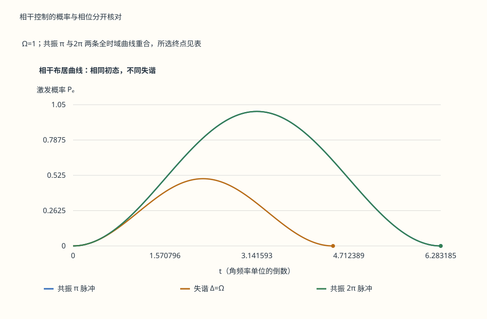
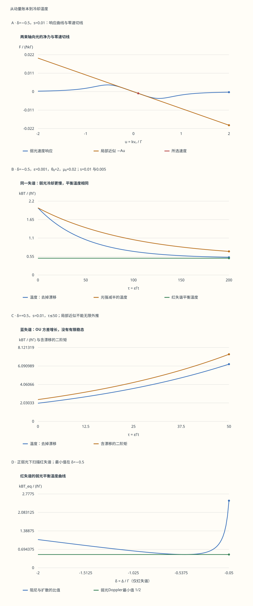

本页目录
原子分子光物理 · 从相干控制到激光冷却与量子气体
阅读路线：先分清内态激发、整体漂移与热运动，再逐个计算光子的平均动量和随机涨落，最后连接到囚禁、量子简并和多体模拟。需要二能级量子力学、导数和概率方差；不预设冷原子实验经验。
学习层：一次激发与一团气体的降温，分别观察什么？
本页要完成的任务：能从两个散射率判断光压力方向；能解释“平均反冲为零”为什么仍有加热；能在明确假设下推导 Doppler 温度；能判断一个窄峰是否足以证明凝聚。
先做相干脉冲实验。它只改变两能级内态，没有自发辐射，也没有速度分布。共振 \(\pi\) 脉冲完全激发，失谐改变振幅和频率，\(2\pi\) 脉冲使布居回到初值。揭示后可以下载包含复振幅、密度矩阵和全部时间节点的记录。
无脚本固定对照：先预测终点，再核对整条概率曲线。共振π与2π的驱动相同，曲线重合，但停止时刻不同。

| 对照 | Ω | Δ | t | Ωeff | 上限 | Pe |
|---|---|---|---|---|---|---|
| resonant-pi | 1 | 0 | 3.14159265 | 1 | 1 | 1 |
| detuned | 1 | 1 | 3.14159265 | 1.41421356 | 0.5 | 0.316563836 |
| resonant-two-pi | 1 | 0 | 6.28318531 | 1 | 1 | 1.49975978e-32 |
下载两项实验的完整固定记录。本实验没有自发辐射或外部运动，不模拟冷却。
再做激光粘胶实验。这次要同时看平均力和动量方差。选择“弱一半”“共振”“关灯”“整体漂移”逐一对比；预测题讨论题干指定的条件，反馈不会随旋钮暗中改变答案。
无脚本固定对照：以下读数与图共享同一份记录。关灯保持初始分布；蓝失谐没有有限稳态。

| 对照 | δ | s | τ | A | d̄ | μ | θ | θeq |
|---|---|---|---|---|---|---|---|---|
| default | -0.5 | 0.01 | 200 | 0.01 | 0.005 | 0.00270670566 | 0.527473458 | 0.5 |
| weak | -0.5 | 0.005 | 200 | 0.005 | 0.0025 | 0.00735758882 | 0.703002925 | 0.5 |
| blue | 0.5 | 0.01 | 50 | -0.01 | 0.005 | 0.0329744254 | 6.29570457 | 不适用 |
| off | -0.5 | 0 | 200 | 0 | 0 | 0.02 | 2 | 不适用 |
下载两项实验的完整固定记录。ε=0.001，θ₀=2，μ₀=0.02；总光强参数是每束s的6倍。
两个实验的参数各自独立。冷却实验的光压力曲线保留完整的弱光速度响应；高斯分布演化另用了零速附近的线性近似。它们不是同一精度的两个画法。每次改参数都要重新预测，避免把上一次的解释误读为新结果。
先修与继续：量子态与观测、开放系统与退相干提供内态背景；本页第3—6节给出冷却模型的全部符号和近似。遇到新平台时，先确定可测量量与误差来源，再迁移模型。
1. 温度、漂移和量子简并是三个不同的问题
一团原子可以整体快速飞行，同时在自身质心参考系里很冷。对一维经典平衡速度分量，温度由方差给出，而不是由平均速度给出：
对任意非平衡分布，右边的方差仍可定义一个“动能温标”，但未必存在描述所有观测量的热力学温度。实验中的局部高斯模型使这个区分可以逐项计算。
低温让热德布罗意波长增大，密度则决定相邻粒子的距离。常用的无量纲量是相空间密度：
这说明只报温度不足以判断量子简并：稀释也会降低 \(\mathcal D\)。全同粒子始终服从量子统计；当 \(\mathcal D\) 不再很小时，经典稀薄气体近似开始失效。数值 \(\zeta(3/2)\approx2.612\) 属于均匀、理想、三维 Bose 气的凝聚条件，第9节会推导，不能用于所有阱与所有粒子。
2. 相干驱动：为什么激发概率还不是冷却量
取基底 \((|g\rangle,|e\rangle)\)，失谐统一定义为 \(\Delta=\omega_L-\omega_0\)。令激发态以激光角频率旋转，并减去不影响观测的单位矩阵项，RWA 哈密顿量为
因此指数级数的偶数项与奇数项分别合成余弦与正弦。从基态出发，令 \(\phi=Et/2\)：
\(E=0\) 时直接用 \(c_g=1,c_e=0\)，不用除以零。实验给出 \(\rho_{ij}=c_i c_j^*\)，因而可以核对归一化以及概率没有包含的相位信息。共振 \(2\pi\) 脉冲给出 \(-I\)：单独测布居看不到整体负号；它与某个参考路径的相对相位是否可见，要由更大的干涉实验决定。
这些结果假设近共振的 RWA、固定驱动、两能级和相干演化。加入自发辐射后应使用开放系统方程，再考虑光子动量与外部运动。将 \(\Delta\) 换成速度相关失谐，只是开始建立运动模型，并不会自动产生完整的冷却理论。
3. 两束光怎样产生平均阻力
下面的冷却模型使用六束等强、独立的弱光，分别沿 \(\pm x,\pm y,\pm z\)；原子用二能级响应近似，发射方向各向同性。忽略光束干涉、偏振梯度、多能级、磁场、碰撞和共同饱和修正。\(\Gamma\) 是激发态布居衰减率，失谐 \(\Delta=\omega_L-\omega_0\) 用角频率；每束的共振饱和参数记为 \(s\)，只保留它的一阶项。
为避免把单位换算混进物理，定义
沿 \(x\) 运动时，轴向两束的失谐分别为 \(\Delta\mp kv_x\)；取 \(v_y=v_z=0\) 的截面，四束横向光有同一个散射率。用 \(r=R/\Gamma\)：
吸收正向光子的动量为 \(+\hbar k\)，反向为 \(-\hbar k\)，于是净平均力是
红失谐给 \(A>0\)，零速附近 \(F_x=-\alpha v_x\)；蓝失谐给反阻尼。曲线可以验证：远离零速时，真实的弱光响应不会沿这条切线无限增长。冷却实验显示切线与完整响应，目的就是让学习者看见近似从哪里开始偏离。
4. 平均反冲为零，为什么动量方差仍增长
把一小段时间内的散射次数视作独立 Poisson 计数。一个速率为 \(R\)、每次动量增量为 \(q\) 的过程，平均动量增长率为 \(Rq\)，方差增长率为 \(Rq^2\)。对于随机方向发射，\(\langle q_x\rangle=0\)，但各向同性给 \(\langle q_x^2\rangle=(\hbar k)^2/3\)。
本页固定扩散系数约定为 \(d\operatorname{Var}(p_x)/dt=2D_p\)（单独计算噪声项时）。轴向吸收与全部六束引发的发射分别贡献
四束横向光吸收时没有 \(x\) 动量，发射时仍会贡献 \(x\) 方向方差。吸收和发射的交叉项因发射的零均值而消失。在弱光独立散射近似下，两项相加得到
只写“自发辐射反冲平均相消”会漏掉方差；只计算发射噪声，又会漏掉吸收次数涨落。零速六束等强时，两项恰好各占一半，但这不适用于任意几何、发射图样或速度。
5. 从随机动量到温度演化
进一步把力在零速线性化，并把扩散固定为零速值。用许多小反冲的连续近似，得到局部 Ornstein–Uhlenbeck（OU）过程及其 Fokker–Planck 方程：
\(W_\tau\) 的增量方差为 \(d\tau\)。将方程分别乘 \(u,u^2\) 积分，或用 Itô 公式，可得均值和方差各自的闭合方程：
取初始高斯，均值 \(\mu_0\)、方差 \(\epsilon\theta_0\)。局部 OU 模型保持高斯，其精确解为
\(A=0\) 时用连续极限 \(\sigma^2=\epsilon\theta_0+2D\tau\)。代码用 expm1 计算接近零的指数差，避免相减消失。\(s=0\) 时同时 \(A=D=0\)，分布保持初值；这不是把原子送到了某个唯一平衡温度。
实验的温度读数为 \(\sigma^2/\epsilon\)，含漂移的二阶矩为 \((\sigma^2+\mu^2)/\epsilon\)。高斯图只画均值两侧各 \(4\sigma\)，固定记录保留全部257个节点和梯形积分，既不重归一化，也不把它当作随机抽样误差。
6. Doppler 温度从哪个平衡得到
仅当 \(s>0,\delta<0\) 时，\(A>0\)，局部高斯稳态可归一化。阻尼带走的随机动能与扩散补入的随机动能平衡：
令 \(x=-\delta>0\)，则 \(\theta_{\rm eq}=x/2+1/(8x)\)，在 \(x=1/2\) 最小：
这是当前弱光、六束和局部半经典模型的最小值。光强在比值中相消，但接近平衡的时间尺度 \(1/A\) 随光强减弱而增长。“先取长期极限再让光强趋零”与“直接关灯”不是同一个操作。有限饱和、多能级和额外加热会改变结果；对应实验和三维 Doppler 模型的比较可见 Chang 等的原始研究。
实验允许 \(-2\le\delta\le2\)（非零绝对值至少0.01）、\(0\le s\le0.02\)（非零至少0.001）、\(0.001\le\epsilon\le0.05\)。这些是数值教学范围，不能当成物理阈值。六束总参数最多0.12，本模型依然只保留弱光一阶项，没有声称饱和误差为零。
记录还给出 \((|\mu|+3\sigma)/(\sqrt{1+4\delta^2}/2)\)，比较分布跨度与响应线宽尺度。这只是提醒检查局部近似的指标，不是严格误差界。蓝失谐下 OU 数学解仍可算，但分布迅速变宽后不能作为完整光压力模型的长期物理预测。反冲温标 \(k_BT_r=\hbar^2k^2/(2m)\) 对应 \(\theta_r=\epsilon/2\)；接近它时也需要检查连续动量近似。
7. 囚禁、亚 Doppler 与反冲温标
光学粘胶主要提供速度阻尼，不保证原子回到某个位置。MOT 结合合适的偏振、能级选择规则与磁场梯度，让塞曼位移改变两束光的局部失谐，中心附近可以同时出现
仅说“加磁场就能困住”不够：恢复力的符号取决于这些配置，真实 MOT 还涉及捕获范围、光束大小与多能级光抽运。当前实验没有位置自由度，因此不能演示囚禁。
多能级原子在偏振梯度中会经历光移势与光抽运循环，Sisyphus 图像用“爬势垒后被泵到较低势能支”解释能量损失。它超出了本页二能级独立光束模型，可以低于 Doppler 温标。反冲能量也不是所有冷却方法不可跨越的普适下界；速度选择暗态等机制需要显式量子动量态与不同散射选择规则。关于这些机制的实验背景，可读 1997年诺贝尔奖官方说明。
8. 蒸发冷却：降温还要记录失去了多少原子
降低阱深或选择性移除高能原子，只完成了“截去高能尾部”。剩余原子要通过弹性碰撞再热化，才可用新的平衡温度描述。若碰撞太慢、加热太强或非弹性损失太快，蒸发不会沿理想路线推进；不存在适用于所有装置的固定损失百分比与降温倍数。
在经典、三维、固定谐振阱中，峰值相空间密度正比于 \(N(\hbar\bar\omega/k_BT)^3\)。因此可用粒子数与温度的比值共同判断效率：
当光阱变浅时阱频也可能下降，所以不能只看 \(T\)。这一经典缩放用来判断到达简并前的趋势，不能替代简并区的态方程与实际蒸发动力学。激光、蒸发与其他冷却方法如何接续，取决于原子、跃迁、密度与目标态，不能按固定“微开—纳开”分界安排所有实验。
9. 均匀气体与谐振阱的 BEC 条件为何不同
先取理想、均匀、三维 Bose 气，热力学极限下基态能量置零。凝聚临界点的化学势趋于0。用动量态数 \(V\,d^3p/(2\pi\hbar)^3\) 积分激发态占据，代入 \(x=p^2/(2mk_BT)\)，得到
等式可由 \(1/(e^x-1)=\sum_{\ell\ge1}e^{-\ell x}\) 逐项积分得到。激发态能容纳的密度有限；固定总密度超过它时，余下的粒子宏观占据基态。因此
三维谐振阱则有不同的态数。若 \(k_BT\gg\hbar\omega_i\)，把量子数空间中的四面体体积近似为 \(G(E)=E^3/(6\hbar^3\omega_x\omega_y\omega_z)\)，求导后积分：
这里 \(\bar\omega=(\omega_x\omega_y\omega_z)^{1/3}\)，能量已减去零点能。相应理想凝聚分数为均匀体系的 \(1-(T/T_c)^{3/2}\) 与谐振阱的 \(1-(T/T_c)^3\)。相互作用、有限尺寸、低维与非平衡会修改这些结论；凝聚也不能简单等同于任何体系的超流。
10. 飞行时间成像：窄峰怎样成为证据
在关阱后无力、无碰撞的弹道膨胀近似下，\(x(t)=x_0+v_0t\)。方差自动保留初始尺寸以及位置—速度相关项：
只有在相关项可忽略、初始尺寸已知或长飞行时间足以压低其相对影响时，云的宽度才能直接换成速度温度。用多个飞行时间拟合比只看一张图更能区分这些项；独立成像模糊还会向观测方差添加标定过的贡献。
简并 Bose 云可能呈现热背景加窄凝聚分量，但凝聚体平均场能释放、碰撞与流体膨胀会改变形状和各向异性。双峰是带模型条件的支持性证据，应结合凝聚分数、密度与温度标定、相干性或干涉诊断。当前高斯冷却图完全没有凝聚态变量，不能从图变窄推断“已经形成BEC”。
11. 费米气体、光晶格与精密操控
单个未配对费米原子不能宏观占据同一个单粒子态，但两种内态的费米原子可以配对。在均匀、两组分平衡气体中，若 \(n\) 是两组分的总密度，则每组分 \(n/2=k_F^3/(6\pi^2)\)，从而
在宽共振、低能、短程且有效程修正小的常用描述中，用 \(1/(k_Fa)\) 排列 BEC–BCS 渡越：\(a>0\) 的分子侧有浅束缚态并可形成分子凝聚；\(a<0\) 的弱吸引侧可形成 BCS 配对；\(a^{-1}=0\) 为幺正点。仅把正负散射长度称作“强吸引/弱吸引”会丢失这一区别。密度、温度、阱与有效程仍提供尺度，幺正区不是没有任何尺度的气体。
光晶格将周期势中的低能态投影到 Wannier 轨道。在单带、最近邻、短程相互作用等条件下，实跃迁幅度 \(J\) 的两组分 Fermi–Hubbard 模型为
每条无向邻边在求和中只出现一次，所以必须保留两个互为厄米共轭的跃迁项。单组分玻色子对应的在位相互作用则是 \(U n_i(n_i-1)/2\)：一个格点上 \(n_i\) 个粒子有 \(n_i(n_i-1)/2\) 对。
这些模型可连接到磁性、关联输运、淬火与量子气体显微测量，但“模型可调”仍需带隙、温度、损失、加热与有限寿命的校准。研究路线应给出制备误差、实际哈密顿量、观测量与可复核的基准，再讨论经典难算区域。离子阱的共同振动模提供内态间耦合，光钟把受控跃迁用于频率计量；二者同样需要相干控制与噪声表征，不能仅由本页冷却曲线评价整个平台。
12. 迁移题：从数字回到模型
1．共振 π 与 2π 脉冲各留下什么态？
取 \(\Omega=1,\Delta=0\)。\(t=\pi\) 时 \(c_g=0,c_e=-i\)，完全激发；\(t=2\pi\) 时 \(c_g=-1,c_e=0\)，布居回到基态。记录中的密度矩阵可以验证单态整体相位不改变观测量。改成 \(\Delta=1,t=\pi\) 后上限为 \(1/2\)，实际 \(P_e=\frac12\sin^2(\pi/\sqrt2)\approx0.316564\)，频率也变为 \(\sqrt2\)。
2．在 δ=−1/2、s=0.01 时，噪声的两项各是多少？
零速每束 \(r_0=0.0025\)。吸收项 \(\bar d_{\rm abs}=(2r_0)/2=0.0025\)；发射项 \(\bar d_{\rm em}=(6r_0)/6=0.0025\)，总 \(\bar d=0.005\)。\(A=0.01\)，所以 \(\theta_{\rm eq}=0.5\)。若漏掉吸收噪声，就会错误地得到温度0.25。
3．默认参数在 τ=200 时，降下来的是什么？
\(\epsilon=0.001,\theta_0=2,\mu_0=0.02,A=0.01\)。均值为 \(0.02e^{-2}\)，温度为 \(0.5+1.5e^{-4}\approx0.527473\)。含漂移二阶矩为温度再加 \(0.4e^{-4}\)。温度下降和漂移减弱同时发生，但它们分别来自方差与均值，不能互相替代。把初始温度设为0.5而保留漂移，可使温度保持不变、整体运动仍被阻尼。
4．为何零失谐有加热，而蓝失谐没有负温度稳态？
零失谐 \(A=0\)，正光强时 \(D>0\)，因此均值不变、方差线性增长。蓝失谐 \(A<0\)，稳态形式 \(p\propto\exp[-Au^2/(2D)]\) 随 \(|u|\) 增大而增长，不能归一化。负的 \(D/A\) 不是稳态方差，也与能谱有上界系统中的负绝对温度概念无关。关灯则 \(D=A=0\)，保留任意初始分布。
5．原子数减半、温度减半，相空间密度一定增加8倍吗？
经典谐振阱频率不变时，比例是 \((1/2)\times2^3=4\)。若几何平均阱频也减半，则还要乘 \((1/2)^3\)，最终只有原来的 \(1/2\)。因此蒸发效率必须同时记录粒子数、温度和约束强度。这是比例核算，不是声称某个蒸发程序一定实现这些变化。
6．为什么谐振阱凝聚分数的幂次是3？
三维谐振阱 \(g(E)\propto E^2\)，积分中代入 \(E=k_BTx\) 会产生 \(T^3\)；均匀三维气体 \(g(E)\propto E^{1/2}\)，产生 \(T^{3/2}\)。因此理想气体在 \(T=T_c/2\) 时，谐振阱凝聚分数为 \(7/8\)，均匀体系为 \(1-2^{-3/2}\approx0.646447\)。粒子统计相同，空间约束改变了激发态容量。
7．两张不同时间的云图总能精确求温度吗？
一般不能。方差是关于飞行时间的二次式，有初始方差、协方差、速度方差三个未知系数。只有额外知道协方差为零等条件，两个时间点才足以解两个未知数；实际还需重复测量与成像误差评估。相互作用膨胀不满足弹道假设时，不能直接套这个二次模型。
8．两格点只有 −J c₁†c₂，为什么不够？
在单粒子基底 \((|1\rangle,|2\rangle)\) 中，这一项的矩阵是 \(\begin{pmatrix}0&-J\\0&0\end{pmatrix}\)，当实 \(J\ne0\) 时不厄米。加上 \(-Jc_2^\dagger c_1\) 后得到 \(\begin{pmatrix}0&-J\\-J&0\end{pmatrix}\)，本征值为 \(\pm J\)，生成幺正演化。若跃迁带复相位，反向项的系数必须取复共轭。
下一步可将第5节的局部OU方程替换为速度相关漂移与扩散，先检查离散化、概率守恒和边界通量，再比较冷却时间。要研究 MOT、亚 Doppler 或多体凝聚，还必须添加相应自由度与机制；这也是从本页基础通往前沿实验时应先完成的模型升级。